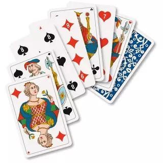

R2-ALGO-02 : Révision algorithmes (Tri)
Contents

R2-ALGO-02 : Révision algorithmes (Tri)#
Objectifs pédagogiques#
mettre en action les différents algorithmes de tri avec des cartes
formaliser certains algorithmes de tri en algorigrammes
Le jeu de Jass#
Un jeu de cartes de jass se compose de :
36 cartes:
9 hauteurs
4 couleurs : pique, coeur, carreau, trèfle
les hauteurs sont dans l’ordre :
le 6
le 7
le 8
le 9
le 10
le valet
la dame
le roi
l’as
Exercice 1#
Vous recevez un paquet de cartes
observez toutes les cartes
Exercice 2 (recherche d’une carte)#
mélangez vos 9 cartes
placez-les sur la table devant vous face cachée
trouvez une méthode (un algorithme) pour recherchez la plus haute carte.
ATTENTION : vous ne pouvez avoir plus de DEUX cartes retournées SIMULTANÉMENT
dessinez l’algorigramme de votre méthode
Exercice 3 (trier les cartes)#
mélangez vos 9 cartes
placez-les sur la table devant vous face cachée
trouvez une méthode (un algorithme) pour trier les cartes de la plus petite à la plus grande
ATTENTION : vous ne pouvez avoir plus de DEUX cartes retournées SIMULTANÉMENT
La méthode doit être régulière, c’est-à-dire que les coups (les intructions) possibles sont :
échanger deux cartes
déplacer une carte
comparer deux cartes
Définition : mesure#
une mesure est l’action d’évaluer une grandeur d’après son rapport avec une grandeur de même espèce, prise comme unité et comme référence.
Tri à bulles#
L’algorithme parcourt le tableau et compare les éléments consécutifs. Lorsque deux éléments consécutifs ne sont pas dans l’ordre, ils sont permutés.
Après un premier parcours complet du tableau, le plus grand élément est forcément en fin de tableau, à sa position définitive. En effet, aussitôt que le plus grand élément est rencontré durant le parcours, il est mal trié par rapport à tous les éléments suivants, donc permuté avec le suivant jusqu’à arriver à la fin du parcours.
Après le premier parcours, le plus grand élément étant à sa position définitive, il n’a plus à être traité. Le reste du tableau est en revanche encore en désordre. Il faut donc le parcourir à nouveau, en s’arrêtant à l’avant-dernier élément. Après ce deuxième parcours, les deux plus grands éléments sont à leur position définitive.
Il faut donc répéter les parcours du tableau, jusqu’à ce que les deux plus petits éléments soient placés à leur position définitive.
Lien sur une vidéo youtube
Tri sélection#
Le principe du tri par sélection est le suivant :
Rechercher le plus petit élément de la liste, et l’échanger avec l’élément d’indice 0 (le premier) ;
Rechercher le second plus petit élément du reste de la liste, et l’échanger avec l’élément d’indice 1 (le second) ;
Continuer de cette façon jusqu’à ce que le tableau soit entièrement trié.
À tout moment, la liste d’éléments déjà parcourus (jusqu’à l’élément que l’on considère à un moment donné) est toujours bien triée.
Lien sur une vidéo
Tri insertion#
Le principe du tri par insertion est le suivant : On parcourt la liste d’éléments à trier du deuxième au dernier élément. Pour chaque nouvel élément considéré:
On l’insère à l’emplacement correct dans la liste
Et on décale tous les nombres plus grands d’une case vers la droite.
À tout moment, la liste d’éléments déjà parcourus (jusqu’à l’élément que l’on considère à un moment donné) est toujours bien triée.
Lien sur une vidéo youtube
Tri fusion#
Ce tri est basé sur la technique algorithmique diviser pour régner. On commence par subdiviser la liste en listes de plus en plus petites. On obtient des listes de taille 1 (un seul élément dans chaque liste)
On fusionne les listes, ce qui consiste à réunir deux listes triées en une seule.
On continue jusqu’à ce qu’on obtienne une seule liste.
L’efficacité de l’algorithme vient du fait que deux listes triées peuvent être fusionnées en temps linéaire (c’est-à-dire un temps proportionnel à la taille des deux listes)
Lien sur une vidéo youtube
Exercice 4 (comparaison des méthodes)#
Pour pouvoir comparer les méthodes (les algorithmes), il faut une mesure. Dans le cas des différents algorithmes de tri, nous choisissons le nombre de comparaisons entre deux cartes entre l’état 0 (lorsque les cartes sont mélangées jusqu’à l’état 1 (lorsque les cartes sont totalement triées).
Par groupes remplissez le tableau suivant :
algorithme |
Nbr de comparaisons |
|---|---|
Tri à bulles |
|
Tri sélection |
|
Tri insertion |
|
Tri fusion |
un élève compte le nombre de comparaisons
l’autre élève compatiblise à chaque étape et note la somme finale dans le tableau